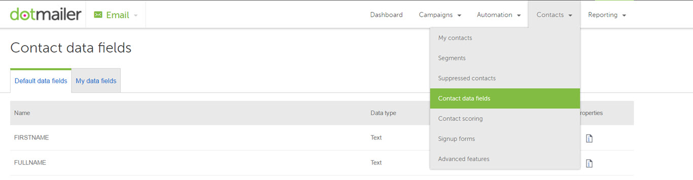
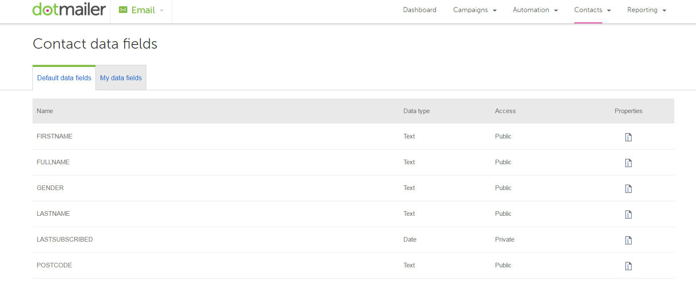
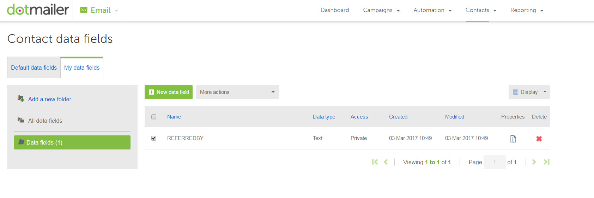
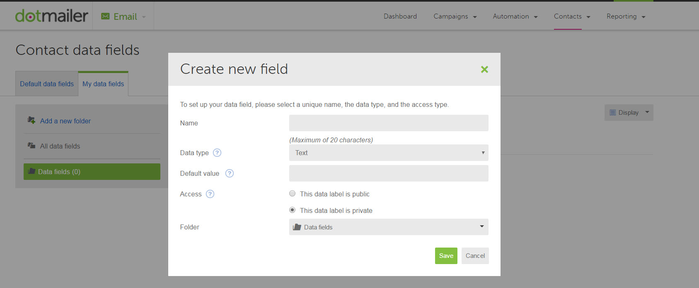
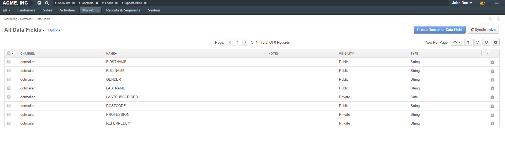
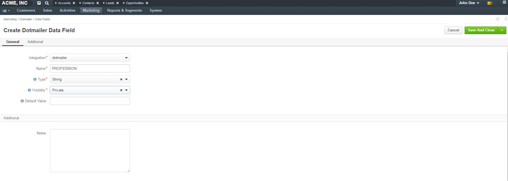
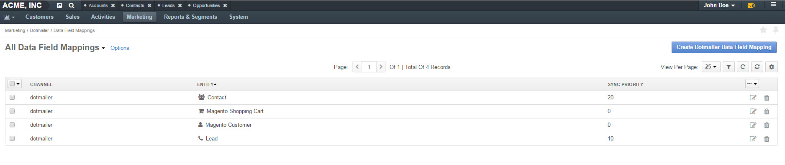
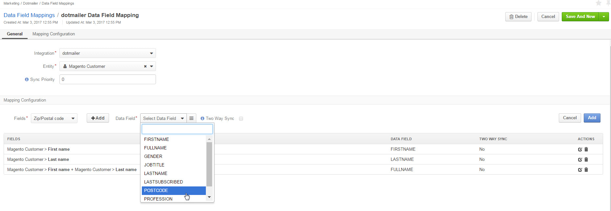

As well as utilizing the default contact data fields (FIRSTNAME, FULLNAME or LASTNAME) that are already in place in dotmailer address books, you can create new contact data fields to capture and/or contain additional information about your contacts. The more useful data you can collect on your contacts, the more you can proficiently segment, target and personalise your email campaigns, and in turn generate better response rates.
The default fields are listed on the Default Data Fields tab, while new customized fields are on My Data Fields. These are located in Contacts>Contact Data fields.
 Within My Data Fields, you can view, create or remove new data fields.
To create a new data field, click New Data Field. A dialog box will open with the following fields to fill in:
| Field | Description |
|---|---|
| Name | Enter a name for the data field. It must consist of alphanumeric characters only, with hyphens and underscores, if required. The maximum length is 20 characters. |
| Type | Select data field type: string, numeric, date or boolean. Make sure you select the correct type so your information could render correctly. |
| Default Value | When sending a campaign that uses template personalization, a default value ensures that a value is always displayed even if data field is blank. |
| Access | Select access type: public or private. Make the field public if you want to allow your contacts to view and amend the data you hold on them in this field. |
| Folder | Select the folder to save your data field to. by default, Data Fields folder is selected. |
Click Save to save the new data field.
The dotmailer data fields are collected by Oro and can be found under Marketing>dotmailer>Data Fields. Here, you can view, remove and create new dotmailer data fields on the Oro side.
To create a new data field in Oro application, click Create dotmailer Data Field in the upper-right corner of the page. A form will open with the following fields to fill in within the General section:
| Field | Description |
|---|---|
| Integration | Select your dotmailer integration. |
| Name | Enter a name for the data field. It should consist of alphnumeric characters only, with hyphens and underscores, if required. |
| Type | Select data field type: string, numeric, date or boolean. Make sure you select the correct type so your information could render correctly. |
| Visibility | Select visibility type: public or private. Make the field public if you want to allow your contacts to view and amend the data you hold on them in this field. |
| Dafault Value | When sending a campaign that uses template personalization, a default value ensures that a value is always displayed even if data field is blank. Default value depends on the data field type selected. |
You can add a note for the data field you are creating in the Additional section in Notes.
Click Save and Close to save the new data field. Once saved, it will appear in the Data Fields grid.
From within the grid, you can also:
Note
System fields (e.g. FIRSTNAME, LASTNAME) cannot be deleted.
By default, data fields are synchronized with dotmailer once a day. This interval can be changed in System>Configuration>Integrations>dotmailer Settings>Synchronization Settings. Synchronization can be also trigged manually by clicking the Synchronize button from data fields grid.
Note
Existing data fields cannot be updated.
Data Field Mappings is available under Marketing in the main menu.
In order to export/import specific data fields from/to dotmailer, you can build mapping between Oro entitiy fields and dotmailer data fields. When a new integration is created, default mappings for common data fields (FIRSTNAME, LASTNAME and FULLNAME) are added automatically for Oro application entities (Contact, Lead etc.). Existing mapping can be updated and new mappings can be added.
To create a new mapping, click Create dotmailer Data Field mapping in the upper-right corner of the Data Field Mappings page.
A form will emerge with the following fields to fill in within the General section:
| Field | Description |
|---|---|
| Integration | Select your dotmailer integration. |
| Entity | Select the entity (e.g. Contact, Magento Customer, etc). |
| Sync Priority | If two or more entities are linked to 1 dotmailer contact, sync priority will be used to identify the master record. |
Configure your mapping in the Mapping Configuration section of the same page.
The Two Way Sync check box should be selected if you want to update application entities with data from dotmailer.
Once you have configured mapping, tracking of changes will be performed automatically every 5 minutes. You can manually re-synchronize data fields on a required marketing list from its view page. To perform manual synchronization:
Related Topics on Marketing Automation